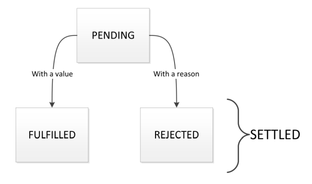
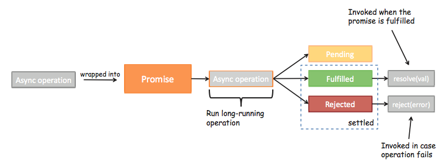
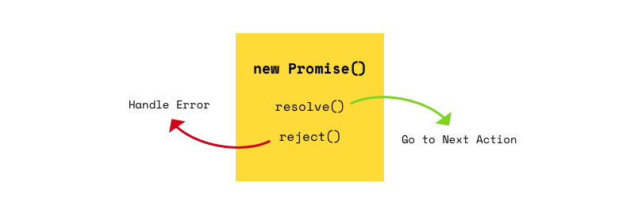
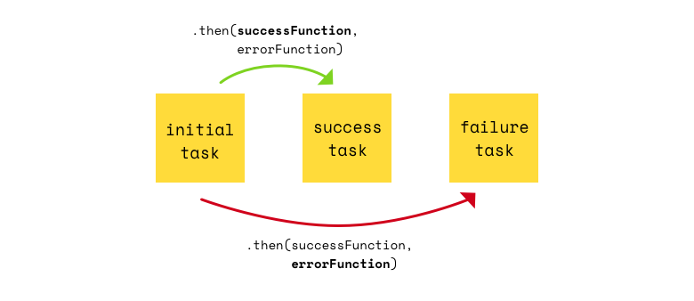
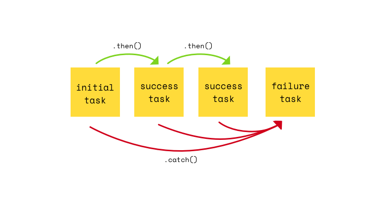

1. Вступ
Promise (обіцянка, проміс) — об'єкт, який представляє поточний стан асинхронної операції. Зручний спосіб організації асинхронного коду.
У проміса є 2 стани:
- Pending — очікування, початковий стан при створенні проміса.
- Settled — виконаний, який в свою чергу ділиться на дві категорії:
fullfilled— виконано успішно іrejected— виконано з помилкою.
Спочатку проміс знаходиться в стані очікування (pending), після чого він може
виконатися успішно (fulfilled) або з помилкою (rejected). Коли проміс
переходить в стан виконаний (settled), з результатом або помилкою - це
назавжди. Грубо кажучи, проміс - це болванка для даних, значення яких ми не
знаємо в момент його створення.

Спосіб використання:
- Код, якому треба зробити щось асинхронно, створює обіцянку і повертає його.
- Зовнішній код, отримавши обіцянку, навішує на нього обробники.
- По завершенні процесу асинхронний код переводить обіцянку в стан
fulfilledабоrejected. При цьому автоматично викликаються обробники у зовнішньому коді.

Відмінність проміса і callback-функції:
- Колбеки - це функції, обіцянки - це об'єкти.
- Колбеки передаються в якості аргументів з зовнішнього коду у внутрішній,
обіцянки повертаються з внутрішнього коду в зовнішній. - Колбеки обробляють успішне або неуспішне завершення, обіцянки нічого не
обробляють. - Колбеки можуть обробляти кілька подій, обіцянки пов'язані тільки з одною
подією.
Обіцянки (крім читабельності, яка є побічним позитивним ефектом) використовуються в основному для композиції, ланцюжки викликів і обробки результату і помилок в окремих логічних гілках.
2. Створення
Обіцянка створюється як екземпляр класу Promise з однією функцією в якості
аргументу. Виклик конструктора негайно виконає функцію fn, передану в якості
аргумента. Ціль цієї функції полягає в інформуванні примірника (проміса), коли
подія, з якою він пов'язаний, буде завершено.
const promise = new Promise((resolve, reject) => {
/*
* Ця функція буде викликана автоматично. У ній можна виконувати
* будь-які асинхронні операції. Коли вони завершаться - потрібно
* викликати одне з: resolve (результат) при успішному виконанні,
* або reject(помилка) при помилці.
*/
});
Параметри переданої функції:
resolve(arg)— функція, яку необхідно викликати при успішній операції. Переданий в неї аргумент буде значенням виконаного проміса.reject(arg)— функція, яку необхідно викликати при помилці. Переданий в
неї аргумент буде значенням помилки, яке можна буде обробити.

const promise = new Promise((resolve, reject) => {
setTimeout(() => {
resolve('success!');
}, 2000);
});
У змінну promise буде записаний об'єкт обіцянки в стані pending, а через 2
секунди, після того, як буде викликаний resolve("success!"), проміс перейде в
стан fullfilled.
3. Використання
Після того, як проміс створений, з ним можна працювати використовуючи методи
then і catch, які доступні через його прототип. Код пишеться так, як ніби ми
розмірковуємо про те, що може статися, якщо проміс виконається чи ні, не думаючи
про часові рамки.
3.1. then
Дозволяє виконати код в якому можна отримати доступ і обробити результат проміса.
promise.then(onResolve, onReject)
В метод then передаються дві функції, які будуть викликані, коли проміс
перейде в стан виконаний (settled).
onResolve(arg)— буде викликана при успішному виконанні проміса, і отримає результат проміса, як аргумент (те, що передаємо в викликresolve).onReject(arg)— буде викликана при виконанні проміса з помилкою, і отримає помилку, як аргумент (те, що передаємо у викликreject).

const promise = new Promise((resolve, reject) => {
setTimeout(() => {
/*
* Якщо якась умова виконується, тобто все добре,
* викликаємо resolve і отримує дані. Умова залежить від завдання.
*/
resolve('Data passed into resolve function :)');
// Якщо щось не так, викликаємо reject і передаємо помилку
// reject("Error passed into reject function :(")
}, 2000);
});
// Виконається миттєво
console.log('BEFORE promise.then');
const onResolve = data => {
console.log('INSIDE promise.then - onResolve');
console.log(data); // "Data passed into resolve function :)"
};
const onReject = error => {
console.log('INSIDE promise.then - onReject');
console.log(error); // "Error passed into reject function :("
};
promise.then(
// буде викликана через 2 секунди, якщо обіцянка виконається успішно
onResolve,
// буде викликана через 2 секунди, якщо обіцянка виконається з помилкою
onReject,
);
// Виконається миттєво
console.log('AFTER promise.then');
Якщо onResolve і onReject не містять складної логіки, їх оголошують як
інлайн функції в методі then.
const promise = new Promise((resolve, reject) => {
setTimeout(() => {
// Якщо все ок, то викликається resolve і передаємо дані
resolve('Data passed into resolve function :)');
// Якщо щось не так, викликати reject і передаємо помилку
// reject("Error passed into reject function :(")
}, 2000);
});
// Виконається миттєво
console.log('BEFORE promise.then');
promise.then(
// Буде викликана через 2 секунди, якщо обіцянка виконається успішно
data => {
console.log('INSIDE promise.then - onResolve');
console.log(data); // "Data passed into resolve function :)"
},
// Буде викликана через 2 секунди, якщо обіцянка виконається з помилкою
error => {
console.log('INSIDE promise.then - onReject');
console.log(error); // "Error passed into reject function :("
},
);
// Виконається миттєво
console.log('AFTER promise.then');
3.2. catch
Трохи далі ми дізнаємося про ланцюжки промісах, а поки навчимося обробляти
помилки не в колбеці onReject метода then, а в спеціальному методі catch.
Обробляти помилки дуже зручно, використовуючи метод catch тільки один раз, в
кінці ланцюжка.
promise.catch(onReject)
Хендлер для обробки стану reject, виповниться тільки якщо проміс виповниться з
помилкою (rejected). onReject(arg) буде викликана при виконанні проміса з
помилкою, і отримає помилку як аргумент (те, що передаємо в виклик reject).
Створимо обіцянку, зробимо затримку на 2 секунди, викличемо reject, імітуючи
виконання проміса з помилкою.
const promise = new Promise((resolve, reject) => {
setTimeout(() => {
reject('There was an error :(');
}, 2000);
});
/*
* then не виконається оскільки в функції fn, всередині new Promise (fn),
* був викликаний reject (). А catch якраз виконається через 2 секунди
*/
promise
.then(data => {
console.log(data);
})
.catch(error => {
console.log(error);
});
3.3. finally
Цей метод може бути корисний, якщо ви хочете виконати деяку обробку або очистку після того, як обіцянку буде виконано, незалежно від результату.
Дозволяє виконати зазначену callback-функцію після того, як обіцянка буде
дозволена (виконана або відхилена). Дозволяє уникнути дублювання коду в
обробниках then() і catch(). Повертає обіцянку.
promise.finally(() => {
// settled (fulfilled або rejected)
});
Функція зворотного виклику не отримає ніяких аргументів, оскільки не можна точно визначити чи виконано обіцянку або відхилено. Тут буде виконуватися код, який залежить тільки від часу його виконання, значення проміса не важливо.
const promise = new Promise((resolve, reject) => {
setTimeout(() => {
resolve('success!');
}, 2000);
});
promise
.then(data => console.log(data)) // "success"
.catch(error => console.log(error))
.finally(() => console.log('finished!')); // "finished"
4. Ланцюжки промісів
Чейнінг (chaining) — можливість будувати асинхронні ланцюжка з промісів. Одна з основних причин існування та активного використання промісів.
Кожен метод then, результатом свого виконання, повертає проміс. Його значенням
буде те, що повертається з callback-функції onResolve.

asyncFn(...)
.then(...)
.then(...)
.then(...)
.catch(...);
Оскільки then повертає проміс, до його виконання може пройти деякий час, тому
що та частина ланцюжка, яка залишилася, буде чекати.
const promise = new Promise((resolve, reject) => {
setTimeout(() => {
resolve(5);
}, 2000);
});
promise
.then(value => {
console.log(value); // 5
return value * 2;
})
.then(value => {
console.log(value); // 10
return value * 3;
})
.then(value => {
console.log(value); // 30
})
.catch(error => {
console.log(error);
});
При виникненні помилки в будь-якому місці ланцюжка, виконання всіх наступних
then скасовується, а управління передається методу catch.
5. Статичні методи класу Promise
Іноді бувають ситуації, коли нам необхідно дочекатися виконання не одного, а відразу набору промісів, і тільки тоді щось зробити. Бувають і такі ситуації, коли з набору промісів необхідно дочекатися виконання будь-якого одного, проігнорувавши інші.
5.1. Promise.all()
Статичний метод, отримує масив промісів і чекає їх виконання, повертає проміс.
Promise.all([promise1, promise2, ...])
При успішному виконанні всіх промісів з масиву, проміс, який повертається з
Promise.all перейде в стан settled -> fullfilled, а його значенням буде
масив результатів виконання кожного проміса.
Якщо в масиві промісів хоча б один виповнився з помилкою, то перейде в стан
settiled -> rejected, а значенням проміса буде помилка.
Напишімо функцію, яка буде приймати текст для resolve, і затримку в мс, а
результатом свого виконання буде повертати проміс. Потім створимо 2 проміси з
різним часом затримки.
const makePromise = (text, delay) => {
return new Promise(resolve => {
setTimeout(() => resolve(text), delay);
});
};
const promiseA = makePromise('promiseA', 1000);
const promiseB = makePromise('promiseB', 3000);
/*
* Виконається через 3 секунди, коли виконається другий проміс з затримкою в 3c.
* Перший виконається через секунду і просто буде готовий
*/
Promise.all([promiseA, promiseB])
.then(result => console.log(result)) //["promiseA", "promiseB"]
.catch(err => console.log(err));
5.2. Promise.race()
Promise.race([promise1, promise2, ...])
Статичний метод, отримує масив промісів і повертає обіцянку. Коли хоча б одна обіцянка в масиві виповнилася, виповниться проміс, який повертається, а всі інші будуть відкинуті.
const makePromise = (text, delay) => {
return new Promise(resolve => {
setTimeout(() => resolve(text), delay);
});
};
const promiseA = makePromise('promiseA', 1000);
const promiseB = makePromise('promiseB', 3000);
/*
* Виконається через 1 секунду, коли виконається найшвидший promiseA
* з затримкою в 1c. Другий проміс promiseB буде проігнорований
*/
Promise.race([promiseA, promiseB])
.then(result => console.log(result)) // "promiseA"
.catch(err => console.log(err));
6. Promise.resolve(), Promise.reject() і Promise.finally()
Виклик статичного методу Promise.resolve(value) створює успішно виконаний
проміс з результатом value. Це аналогічно
new Promise((resolve) => resolve(value)), тільки коротше. Цей метод
використовують, коли хочуть побудувати асинхронний ланцюжок, і початковий
результат вже є.
Це можна використовувати для того, щоб замінити callback на ланцюжок промісів.
Тобто замість того, щоб передавати callback в функцію і сподіватися на краще,
отримуємо проміс і чейнимо then, в якому доступний результат роботи функції.
const getMessage = function (callback) {
const input = prompt('Введіть повідомлення');
callback(input);
};
const logger = message => console.log(message);
getMessage(logger);
Перетворюється в наступне.
const getMessage = function () {
const input = prompt('Введіть повідомлення');
return Promise.resolve(input);
};
const logger = message => console.log(message);
getMessage().then(message => logger(message));
// Або ще коротше
getMessage().then(logger);
Аналогічно Promise.reject(error) створює вже виконаний проміс, але не з
успішним результатом, а з помилкою error. Він використовується вкрай рідко,
тому що помилка виникає зазвичай не на початку ланцюжка, а в процесі його
виконання.